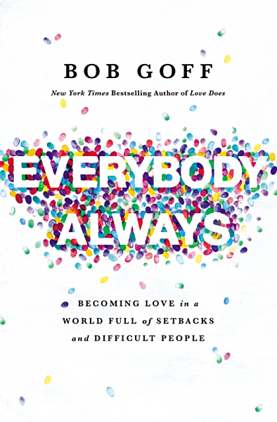
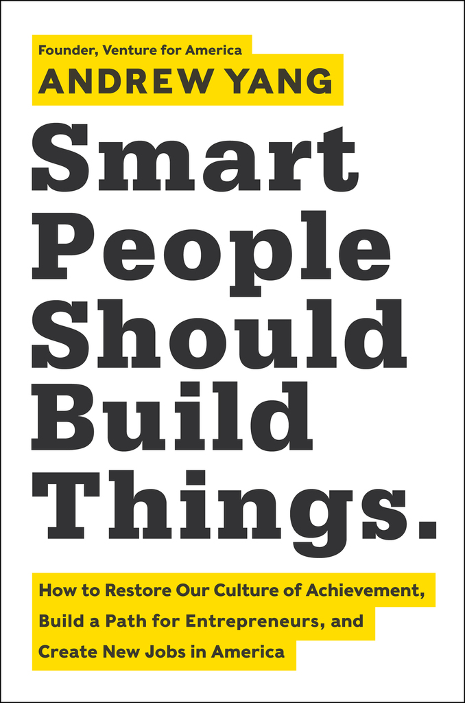
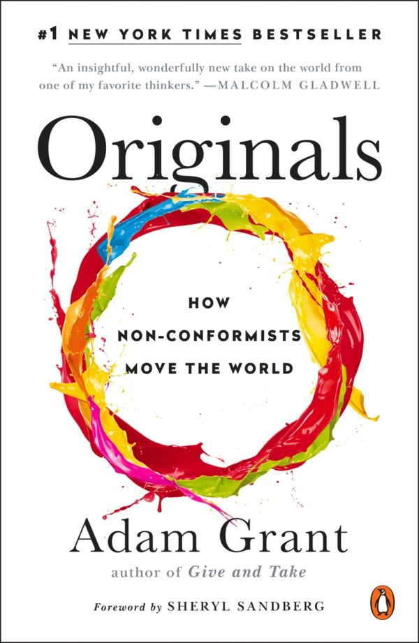
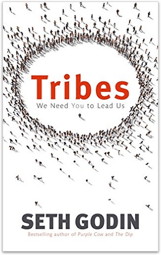
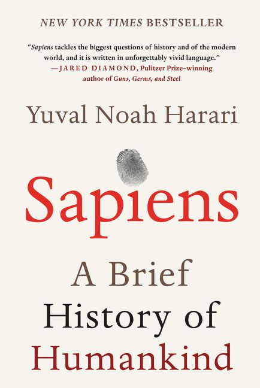
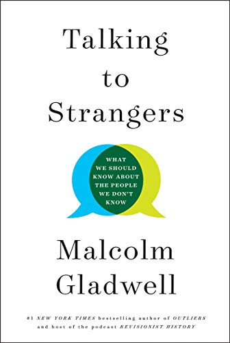
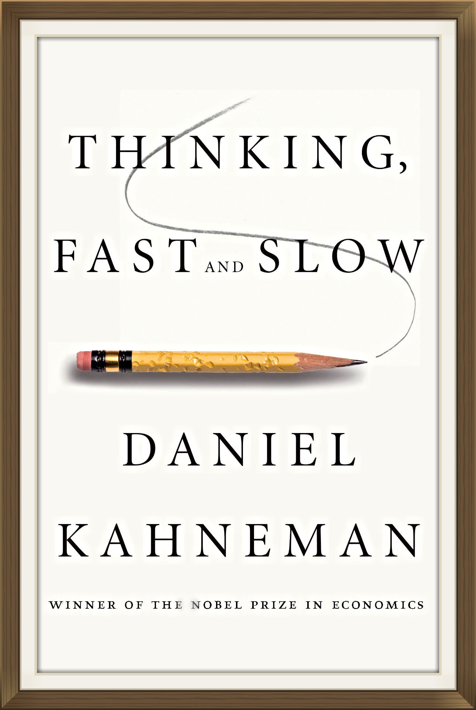
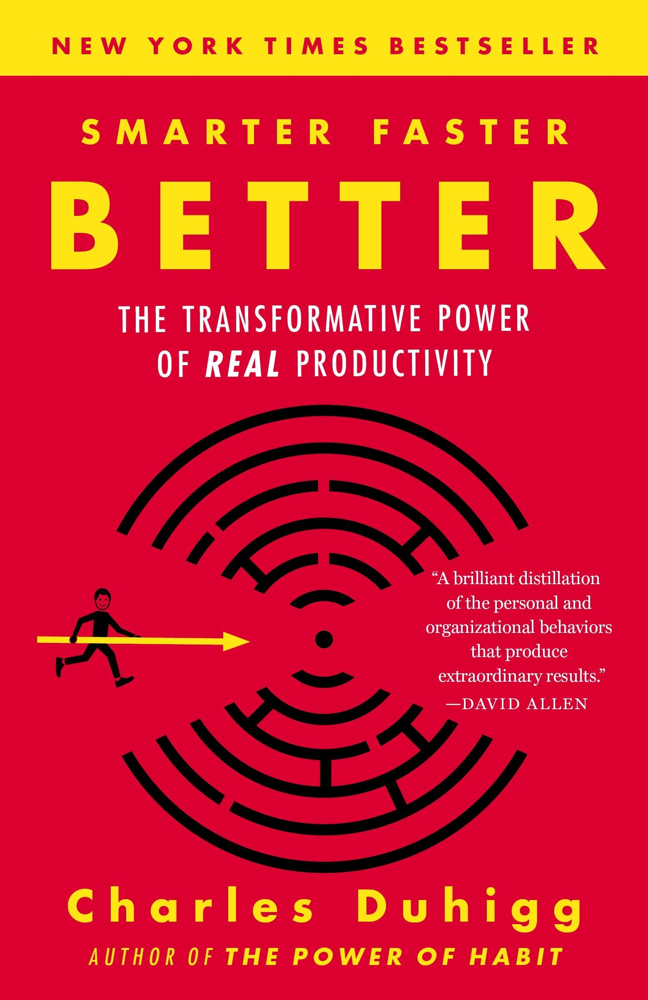
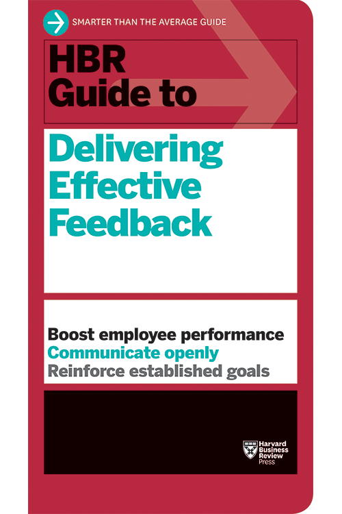
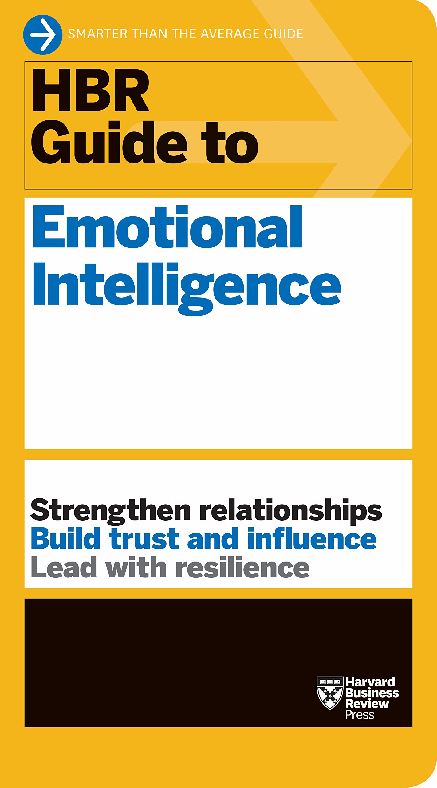

-
TITAN
Ron Chernow
01/31/2020-02/28/2020
Ron Chernow explores the life of oil tycon and the world's first billionaire, John d. Rockefeller, SR.
-
The Autobiography of Benjamin Franklin
Benjamin Franklin
01/27/2020-01/31/2020
Benjamin Franklin's self reflection of his own life and experiences. Franklin explores many events that shaped
his life, and is
retrospecively observing the key moments in his life where he pivoted that ultimately allowed him to arrive to
the status and position he had.
-

Everybody, Always
Bob Goff
01/24/2020-01/27/2020
Bob Goff explores how his faith and philosophy of radical openness and acceptance has helped shape the lives of
him and everyone around him.
Goff reflects on different experiences where he felt his faith challenged and falter, and what ultimately
brought him back. Throughout the book
the author experiences everything from the death of a friend, to the forgiveness of an African Witch Doctor that
mutilated a young child that the author
ends up adopting. It's a book about unconditional love, actively trying to make the world better, and asking
for/receiving forgiveness.
-

Smart People Should Build Things
Andrew Yang
01/19/2020-01/24/2020
Andrew Yang makes the case for inspiring entrepreneurship and innovation in the United States. Throughout the
book Yang explores the talent -
or - "brain drain" that's causing some of the brightest minds to stear away from innovating and stay on a proven
path to stability in finance or consulting.
Yang makes the case that while those industries are important, they only work if they have companies to take on
as clients. If everybody is consulting, there is nobody to consult.
If everybody is looking to underwrite a company for an IPO, there is no one left to start a company to bring
public. Yang's ideas at first glance seem to be
unimportant in today's world, there are plenty of companies to consult and plenty of private companies to take
public- however the data he provides shows us that a major
talent crisis may not be something too far in the future.
-

Originals: How Non-Conformists Move the World
Adam Grant, Sheryl Sandberg
01/15/2020-01/19/2020
Using surprising studies and stories spanning business, politics, sports, and entertainment, Grant explores how
to recognize a good idea, speak up without getting silenced, build a coalition of allies, choose the right time
to act, and manage fear and doubt; how parents and teachers can nurture originality in children; and how leaders
can build cultures that welcome dissent. Learn from an entrepreneur who pitches his start-ups by highlighting
the reasons not to invest, a woman at Apple who challenged Steve Jobs from three levels below, an analyst who
overturned the rule of secrecy at the CIA, a billionaire financial wizard who fires employees for failing to
criticize him, and a TV executive who didn’t even work in comedy but saved Seinfeld from the cutting-room floor.
The payoff is a set of groundbreaking insights about rejecting conformity and improving the status quo.
-
The Infinite Game
Simon Sinek
01/11/2020 - 01/15/2020
In this revelatory new book, Simon Sinek offers a framework for leading with an infinite mindset. On one hand,
none of us can resist the fleeting thrills of a promotion earned or a tournament won, yet these rewards fade
quickly. In pursuit of a Just Cause, we will commit to a vision of a future world so appealing that we will
build it week after week, month after month, year after year. Although we do not know the exact form this world
will take, working toward it gives our work and our life meaning.
-
Finish
Jon Acuff
01/09/2020-01/11/2020
If you’re tired of being a chronic starter and want to become a consistent finisher, you have two options: You
can continue to beat yourself up and try harder, since this time that will work. Or you can give yourself the
gift of done.
-

Tribes
Seth Godin
01/06/2020-01/09/2020
With his signature wit and storytelling flair, Godin presents the three steps to building a tribe: the desire to
change things, the ability to connect a tribe, and the willingness to lead.
-

Outliers
Malcolm Gladwell
01/04/2020 - 01/06/2020
In this stunning new book, Malcolm Gladwell takes us on an intellectual journey through the world of
"outliers"--the best and the brightest, the most famous and the most successful. He asks the question: what
makes high-achievers different?
-

Sapiens
Yuval Noah Harari
01/01/2020 - 01/04/2020
“Sapiens tackles the biggest questions of history and of the modern world, and it is written in unforgettably
vivid language.” (Jared Diamond, Pulitzer Prize-winning author of Guns, Germs, and Steel, Collapse, and The
World until Yesterday)
-

Talking To Strangers
Malcolm Gladwell
12/16/2019 - 01/01/2020
Malcolm Gladwell, host of the podcast Revisionist History and author of the number-one New York Times best
seller Outliers, reinvents the audiobook in this immersive production of Talking to Strangers, a powerful
examination of our interactions with people we don't know.
-

Principles
Ray Dalio
11/13/2019 - 12/16/2019
Ray Dalio, one of the world's most successful investors and entrepreneurs, shares the unconventional principles
that he's developed, refined, and used over the past 40 years to create unique results in both life and business
- and which any person or organization can adopt to help achieve their goals.
-

Thinking Fast and Slow
Daniel Kahneman
10/26/2019 - 11/13/2019
The guru to the gurus at last shares his knowledge with the rest of us. Nobel laureate Daniel Kahneman's seminal
studies in behavioral psychology, behavioral economics, and happiness studies have influenced numerous other
authors, including Steven Pinker and Malcolm Gladwell. In Thinking, Fast and Slow, Kahneman at last offers his
own, first book for the general public. It is a lucid and enlightening summary of his life's work. It will
change the way you think about thinking.
-
A New History of Western Philosophy
Anthony Kenny
10/03/2019 - 10/26/2019
Anthony Kenny offers a new perspective and more modernized language to some of the most important and
fundamental western philosophies of all time.
-

Smarter Faster Better
Charles Duhigg
09/23/2019 - 10/03/2019
A fascinating book that explores the science of productivity, and why managing how you think is more important
than what you think - with an appendix of real-world lessons to apply to your life. At the core of Smarter
Faster Better are eight key productivity concepts - from motivation and goal setting to focus and decision
making - that explain why some people and companies get so much done.
-

The Power Of Habit
Charles Duhigg
09/08/2019 - 09/23/2019
In The Power of Habit, award-winning business reporter Charles Duhigg takes us to the thrilling edge of
scientific discoveries that explain why habits exist and how they can be changed. Distilling vast amounts of
information into engrossing narratives that take us from the boardrooms of Procter & Gamble to the sidelines of
the NFL to the front lines of the civil rights movement, Duhigg presents a whole new understanding of human
nature and its potential. At its core, The Power of Habit contains an exhilarating argument: The key to
exercising regularly, losing weight, being more productive, and achieving success is understanding how habits
work. As Duhigg shows, by harnessing this new science, we can transform our businesses, our communities, and our
lives.
-

HBR Guide to Delivering Effective Feedback
Harvard Business Review
08/17/2019 - 09/08/2019
Various Cases and Research Reports out of Harvard Business Review observing the intricacies and most effective
strategies for delivering effective feedback.
-

Building on Bedrock
Derek Lidow
08/02/2019 - 08/17/2019
Derek Lidow focuses on when you should take the leap and whether entrepreneurship is even the right thing for
you - as a founder, co-founder, or investor. Based upon research, but told through the stories of American
businessman and entrepreneur Sam Walton and others, Building on Bedrock discusses the who, what, when, where,
how, how much, and why of successful entrepreneurs. Was it luck, talent, passion, charm, a rich uncle, or
something else that was the key to this person's success? Which might be the key to your success? What you learn
will surprise you.
-

HBR Guide to Emotional Intelligence
Harvard Business Review
07/13/2019 - 08/02/2019
Various Cases and Research Reports out of Harvard Business Review observing Emotional Intelligence; what it
means and strategies to increase your own EQ.
-

Tribe of Mentors
Timothy Ferris
05/26/2019 - 07/13/2019
Tim Ferriss, the number-one New York Times best-selling author of The 4-Hour Workweek, shares the ultimate
choose-your-own-adventure book - a compilation of tools, tactics, and habits from 130+ of the world's top
performers. From iconic entrepreneurs to elite athletes, from artists to billionaire investors, their short
profiles can help you answer life's most challenging questions, achieve extraordinary results, and transform
your life.